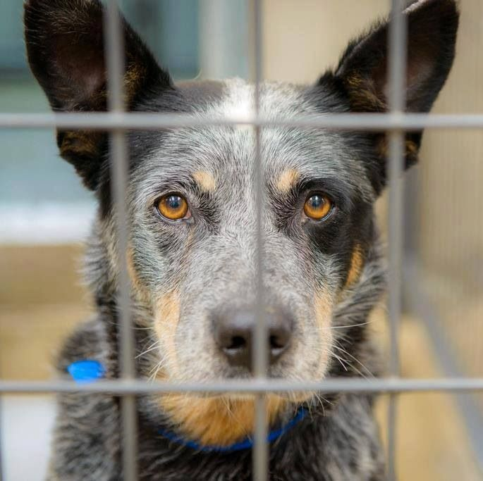

Every dog here has a story — and they’re all waiting for a second chance at love.
At Pawprints Rescue, we connect loving families with dogs in need of a forever home.
Browse our adoptable dogs and find your perfect match.
Donate
Support their second chance
Your donations help provide food, shelter, medical care, and love to dogs in need.
Even a small gift can change a life forever.
Help us give every pup the future they deserve — one tail wag at a time.
Volunteer
Be the reason a tail wags today.
Join our pack of passionate volunteers and help us care for, walk, and socialize our rescued
dogs.
Your time and heart can make a world of difference.
Whether it’s an hour a week or more — every helping hand matters.
Adopt
“Ready to find your friend forever?”
Every dog here has a story — and they’re all waiting for a second chance at love.
At Pawprints Rescue, we connect loving families with dogs in need of a forever home.
Browse our adoptable dogs and find your perfect match.
Donate
Support their second chance
Your donations help provide food, shelter, medical care, and love to dogs in need.
Even a small gift can change a life forever.
Help us give every pup the future they deserve — one tail wag at a time.
Volunteer
Be the reason a tail wags today.
Join our pack of passionate volunteers and help us care for, walk, and socialize our
rescued dogs.
Your time and heart can make a world of difference.
Whether it’s an hour a week or more — every helping hand matters.
Featured animals!

Events and news
“New leash on life: 12 Dogs adopted in June!”
We’re thrilled to announce that 12 of our rescued pups found their forever homes this month.
From shy seniors to bouncy puppies, each adoption is a step closer to our mission.
Thank you to all the amazing families who opened their hearts and homes.
“Pawpalooza 2025: Community Event raises $5000+”
Our annual Pawpalooza was a tail wagging success! With local vendors, dog games and live
music,
we raised over $5000 to support vet care and supplies for our rescues.
Huge thanks to our volunteers, donors, and the amazing turnout from the community.